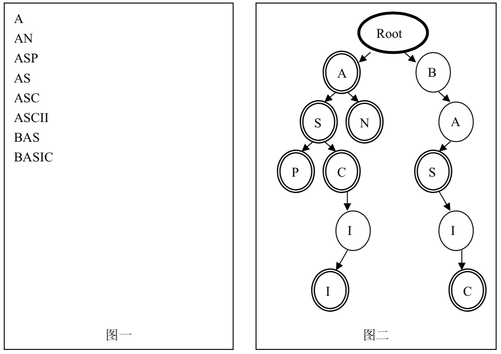

在进行文法分析的时候，通常需要检测一个单词是否在我们的单词列表里。为了提高查找和定位的速度，通常都要画出与单词列表所对应的单词查找树，其特点如下：
例：图一的单词列表对应图二的单词查找树

对一个确定的单词列表，请统计对应的单词查找树的节点数（包括根节点）。
一个单词列表，每一行仅包含一个单词和一个换行/回车符。每个单词仅由大写的英文字符组成，长度不超过63个字符。总长度不超过32K，至少有一行数据。
仅包含一个整数和一个换行/回车符。该整数为单词列表对应的单词查找树的节点数。
A AN ASP AS ASC ASCII BAS BASIC
13
 Comet OJ
Comet OJ